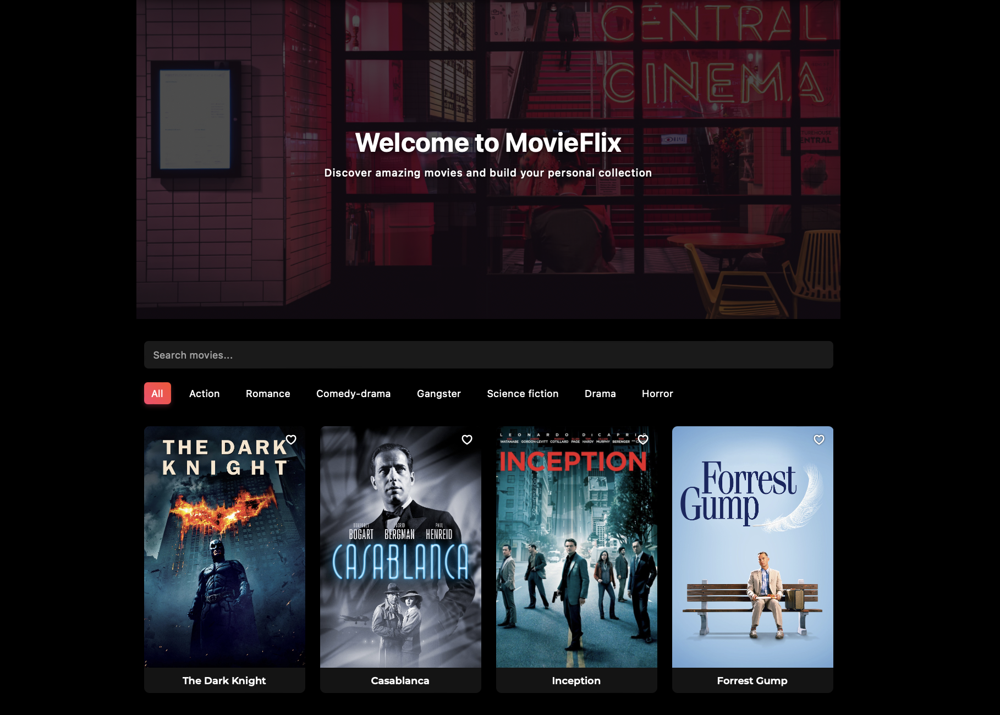

MyFlix - React Client
Project Overview
The MyFlix React client is a single-page application that provides users with access to information about movies, directors, and genres. Built with React, this client-side application communicates with my custom-built REST API and MongoDB database to deliver a seamless movie browsing experience.
The application allows users to create accounts, browse and search movies, add favorites to their profile, and manage their account information. With a responsive design implemented using React Bootstrap, the app provides an optimal viewing experience across a range of devices.
Project Goals
- Develop a responsive, multi-page application using React
- Implement client-side routing with React Router
- Create an intuitive user interface with React Bootstrap components
- Integrate with the MyFlix REST API for data retrieval and management
- Implement user authentication and authorization
- Create a responsive design that works across all devices
Technical Details
Tools & Technologies Used
Application Architecture
The MyFlix client follows a component-based architecture, with a hierarchy of components handling different aspects of the application. The main structure is defined in the entry point index.jsx, which sets up the router and renders the MainView component.
Application Entry Point
import { createRoot } from "react-dom/client";
import React from 'react';
import { BrowserRouter } from 'react-router-dom';
import { MainView } from "./components/main-view/main-view";
import Container from "react-bootstrap/Container";
import "bootstrap/dist/css/bootstrap.min.css";
import "./index.scss";
const App = () => {
return (
<BrowserRouter>
<Container style={{ textAlign: "center", padding: "20px" }}>
<h1 style={{ marginBottom: "20px", fontSize: "4em", color: "white" }}>🄼🄾🅅🄸🄴🄵🄻🄸🅇</h1>
<MainView />
</Container>
</BrowserRouter>
);
};
const container = document.querySelector("#root");
const root = createRoot(container);
root.render(Component Structure
The application is organized into a series of reusable components, each responsible for a specific aspect of the user interface:
- MainView: The core component that handles routing and state management
- LoginView: Manages user authentication and login processes
- MovieCard: Displays individual movie information in a card format
- MovieView: Shows detailed information about a selected movie
- ProfileView: Allows users to view and edit their profile information
- RegistrationView: Handles new user registration
API Integration
The client communicates with the MyFlix REST API using Axios for HTTP requests. JWT tokens are stored in localStorage to maintain user sessions and are included in the request headers for authenticated endpoints.
User Interface Design
The MyFlix client features a clean, intuitive interface designed to provide a seamless movie browsing experience. React Bootstrap components form the foundation of the UI, ensuring consistency and responsiveness across the application.
UI Features
Movie Cards
Each movie is displayed in a card format with key information and actions. The cards include movie posters, titles, and buttons for accessing more details or adding to favorites.
Responsive Layout
The grid-based layout adjusts automatically to different screen sizes, ensuring an optimal viewing experience on devices ranging from mobile phones to desktop computers.
User Profile
The profile view allows users to view their information, update account details, and manage their list of favorite movies.
Styling Approach
The application uses a combination of React Bootstrap components and custom SCSS for styling. This approach allowed for rapid development of a consistent UI while still maintaining the flexibility to customize the appearance to match the brand identity.
Challenges & Solutions
Challenge: State Management
Managing application state across multiple components, particularly for user authentication and favorite movies, was complex.
Solution
I implemented a centralized state management approach in the MainView component, passing down state and update functions as props to child components. For user authentication, I stored the JWT token in localStorage to persist sessions across page refreshes.
Challenge: Responsive Design
Creating a consistent user experience across different screen sizes and devices presented layout and navigation challenges.
Solution
I leveraged React Bootstrap's responsive grid system and components, combined with media queries in SCSS, to create a fluid layout that adapts to different viewport sizes. This approach ensured that the application remains usable and visually appealing on both mobile and desktop devices.
Challenge: API Integration
Handling asynchronous API requests, error states, and loading indicators while maintaining a smooth user experience.
Solution
I implemented a consistent pattern for API requests using Axios, with proper loading states and error handling. For critical operations, I added confirmation dialogs and success messages to keep users informed about the status of their actions.
Outcome & Reflection
The MyFlix React client successfully delivers a fully-featured front-end for the movie database API. The application provides a smooth, intuitive experience for users to browse movies, manage their favorites, and update their profiles. Working on this project significantly improved my skills in:
- Building single-page applications with React
- Implementing client-side routing with React Router
- Creating responsive UI designs with React Bootstrap
- Managing application state in React components
- Integrating front-end applications with RESTful APIs
- Implementing user authentication in React applications
Key Learnings
This project reinforced the importance of planning component architecture before implementation. Taking time to design a clean component hierarchy with well-defined props and state made the development process more efficient and resulted in more maintainable code.
I also gained valuable experience with React's component lifecycle and hooks, learning to optimize rendering and manage side effects efficiently.
Future Improvements
If I were to continue developing this application, I would consider the following enhancements:
- Implementing Redux for more scalable state management
- Adding a movie recommendation system based on user preferences
- Enhancing the search functionality with filters for genres, directors, and release years
- Implementing client-side caching to improve performance
- Adding social features such as sharing movie recommendations